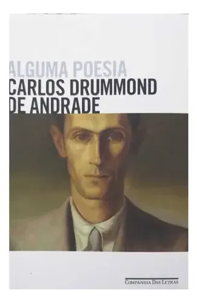
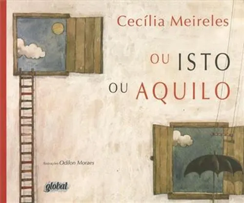

Conceito & Inspiração
O Mistério das Meias Perdidas
Inspirado no olhar poético de Clarice Lispector sobre o cotidiano, nosso concurso transforma o sumiço diário de meias em arte. Uma oportunidade de dar voz ao invisível através da poesia.
Inspirado no olhar poético de Clarice Lispector sobre o cotidiano, nosso concurso transforma o sumiço diário de meias em arte. Uma oportunidade de dar voz ao invisível através da poesia.

Acompanhe em tempo real os dados de conversão de inscrições e os poemas submetidos. Analise o engajamento dos poetas e a taxa de participação do concurso.
Uma jornada poética sobre aprender a sentir, olhar para dentro e encontrar beleza nas pequenas descobertas cotidianas.

A prova de que qualquer assunto banal da vida pode se tornar um grande poema.

Um convite para explorar a sonoridade e a liberdade das palavras na hora de escrever.